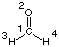

#P HF/STO-3G scf=tight pop=regular HF/STO-3G//HF/STO-3G sp formaldehyde 0 1 C1 O2 1 r2 H3 1 r3 2 a3 H4 1 r3 2 a3 3 180.0 r2=1.21672286 r3=1.10137241 a3=122.73666566 |  |
Standard orientation:
---------------------------------------------------------------------
Center Atomic Atomic Coordinates (Angstroms)
Number Number Type X Y Z
---------------------------------------------------------------------
1 6 0 0.000000 0.000000 -0.533912
2 8 0 0.000000 0.000000 0.682811
3 1 0 0.000000 0.926436 -1.129510
4 1 0 0.000000 -0.926436 -1.129510
---------------------------------------------------------------------
|
Orbital symmetries:
Occupied (A1) (A1) (A1) (A1) (B2) (A1) (B1) (B2)
Virtual (B1) (A1) (B2) (A1)
The electronic state is 1-A1.
Alpha occ. eigenvalues -- -20.31271 -11.12507 -1.33744 -0.80775 -0.63291
Alpha occ. eigenvalues -- -0.54553 -0.44319 -0.35438
Alpha virt. eigenvalues -- 0.28199 0.62863 0.73441 0.91294
Molecular Orbital Coefficients
4 5 6 7 8
(A1)--O (B2)--O (A1)--O (B1)--O (B2)--O
EIGENVALUES -- -0.80775 -0.63291 -0.54553 -0.44319 -0.35438
1 1 C 1S -0.18562 0.00000 0.03301 0.00000 0.00000
2 2S 0.57741 0.00000 -0.10669 0.00000 0.00000
3 2PX 0.00000 0.00000 0.00000 0.60936 0.00000
4 2PY 0.00000 0.53318 0.00000 0.00000 -0.18209
5 2PZ -0.22623 0.00000 -0.44751 0.00000 0.00000
6 2 O 1S 0.09884 0.00000 -0.09381 0.00000 0.00000
7 2S -0.42913 0.00000 0.49909 0.00000 0.00000
8 2PX 0.00000 0.00000 0.00000 0.67586 0.00000
9 2PY 0.00000 0.44231 0.00000 0.00000 0.86991
10 2PZ -0.16466 0.00000 0.67688 0.00000 0.00000
11 3 H 1S 0.26455 0.30023 0.15895 0.00000 -0.35921
12 4 H 1S 0.26455 -0.30023 0.15895 0.00000 0.35921
9 10 11 12
(B1)--V (A1)--V (B2)--V (A1)--V
EIGENVALUES -- 0.28199 0.62863 0.73441 0.91294
1 1 C 1S 0.00000 -0.20803 0.00000 -0.09478
2 2S 0.00000 1.30304 0.00000 0.63168
3 2PX 0.82111 0.00000 0.00000 0.00000
4 2PY 0.00000 0.00000 1.14840 0.00000
5 2PZ 0.00000 -0.44498 0.00000 1.17315
6 2 O 1S 0.00000 0.02810 0.00000 0.11577
7 2S 0.00000 -0.16145 0.00000 -0.86387
8 2PX -0.76729 0.00000 0.00000 0.00000
9 2PY 0.00000 0.00000 -0.31860 0.00000
10 2PZ 0.00000 0.24606 0.00000 0.92393
11 3 H 1S 0.00000 -0.88929 -0.83986 0.15471
12 4 H 1S 0.00000 -0.88929 0.83986 0.15471
|
Orbital symmetries:
Occupied (A1) (A1) (A1) (A1) (B2) (A1) (B1) (B2)
Virtual (B1) (A1) (B2) (A1) (A1) (B2) (B1) (B2) (A1) (A1)
(A1) (B1) (B2) (A2) (B1) (A1) (A1) (B2) (B2) (A1)
(B1) (A2) (A1) (B2) (B2) (A1) (A1) (B1) (A2) (A1)
(B1) (A1) (B2) (B2) (A1) (B1) (B2) (A1) (A1) (A1)
The electronic state is 1-A1.
Alpha occ. eigenvalues -- -20.57126 -11.34192 -1.39677 -0.87126 -0.68760
Alpha occ. eigenvalues -- -0.64756 -0.52789 -0.44085
Alpha virt. eigenvalues -- 0.12516 0.15625 0.21077 0.33039 0.47943
Alpha virt. eigenvalues -- 0.55866 0.57437 0.74085 0.80110 0.85841
Alpha virt. eigenvalues -- 0.98667 1.09706 1.15224 1.24623 1.50263
Alpha virt. eigenvalues -- 1.55040 1.64320 1.65415 1.84157 1.88722
Alpha virt. eigenvalues -- 2.02403 2.11540 2.40847 2.60635 2.73802
Alpha virt. eigenvalues -- 2.75352 2.83229 2.95131 3.25505 3.26831
Alpha virt. eigenvalues -- 3.69981 3.73483 3.80946 4.10219 4.21669
Alpha virt. eigenvalues -- 5.39516 5.50403 6.06721 24.98550 51.59020
Molecular Orbital Coefficients
4 5 6 7 8
(A1)--O (B2)--O (A1)--O (B1)--O (B2)--O
EIGENVALUES -- -0.87126 -0.68760 -0.64756 -0.52789 -0.44085
1 1 C 1S -0.08789 0.00000 0.01245 0.00000 0.00000
2 2S -0.14713 0.00000 0.02091 0.00000 0.00000
3 2PX 0.00000 0.00000 0.00000 0.14230 0.00000
4 2PY 0.00000 0.17912 0.00000 0.00000 -0.08342
5 2PZ -0.08046 0.00000 -0.16684 0.00000 0.00000
6 3S 0.40144 0.00000 -0.07991 0.00000 0.00000
7 3PX 0.00000 0.00000 0.00000 0.23992 0.00000
8 3PY 0.00000 0.27845 0.00000 0.00000 -0.14032
9 3PZ -0.11437 0.00000 -0.26911 0.00000 0.00000
10 4S 0.25737 0.00000 0.04616 0.00000 0.00000
11 4PX 0.00000 0.00000 0.00000 0.19312 0.00000
12 4PY 0.00000 0.13653 0.00000 0.00000 -0.02694
13 4PZ -0.06713 0.00000 -0.06445 0.00000 0.00000
14 5D 0 -0.00393 0.00000 -0.03003 0.00000 0.00000
15 5D+1 0.00000 0.00000 0.00000 0.05175 0.00000
16 5D-1 0.00000 0.00256 0.00000 0.00000 0.06960
17 5D+2 -0.01407 0.00000 -0.01274 0.00000 0.00000
18 5D-2 0.00000 0.00000 0.00000 0.00000 0.00000
19 2 O 1S 0.04656 0.00000 -0.03712 0.00000 0.00000
20 2S 0.07868 0.00000 -0.06286 0.00000 0.00000
21 2PX 0.00000 0.00000 0.00000 0.22120 0.00000
22 2PY 0.00000 0.15228 0.00000 0.00000 0.25178
23 2PZ -0.06544 0.00000 0.23348 0.00000 0.00000
24 3S -0.23278 0.00000 0.19078 0.00000 0.00000
25 3PX 0.00000 0.00000 0.00000 0.34693 0.00000
26 3PY 0.00000 0.23957 0.00000 0.00000 0.38028
27 3PZ -0.09897 0.00000 0.34271 0.00000 0.00000
28 4S -0.24010 0.00000 0.29517 0.00000 0.00000
29 4PX 0.00000 0.00000 0.00000 0.31869 0.00000
30 4PY 0.00000 0.17597 0.00000 0.00000 0.39654
31 4PZ -0.06410 0.00000 0.25624 0.00000 0.00000
32 5D 0 0.00611 0.00000 -0.02418 0.00000 0.00000
33 5D+1 0.00000 0.00000 0.00000 -0.02843 0.00000
34 5D-1 0.00000 -0.01934 0.00000 0.00000 -0.00994
35 5D+2 0.00124 0.00000 -0.00092 0.00000 0.00000
36 5D-2 0.00000 0.00000 0.00000 0.00000 0.00000
37 3 H 1S 0.10699 0.10980 0.05586 0.00000 -0.09884
38 2S 0.15467 0.16948 0.08015 0.00000 -0.21991
39 3S 0.00544 0.04175 0.03555 0.00000 -0.12090
40 4PX 0.00000 0.00000 0.00000 0.00794 0.00000
41 4PY -0.02106 -0.01486 -0.00908 0.00000 0.00414
42 4PZ 0.00944 0.01004 -0.00358 0.00000 -0.00727
43 4 H 1S 0.10699 -0.10980 0.05586 0.00000 0.09884
44 2S 0.15467 -0.16948 0.08015 0.00000 0.21991
45 3S 0.00544 -0.04175 0.03555 0.00000 0.12090
46 4PX 0.00000 0.00000 0.00000 0.00794 0.00000
47 4PY 0.02106 -0.01486 0.00908 0.00000 0.00414
48 4PZ 0.00944 -0.01004 -0.00358 0.00000 0.00727
|
last changes: 09.01.2005, HZ questions & comments to: zipse@cup.uni-muenchen.de